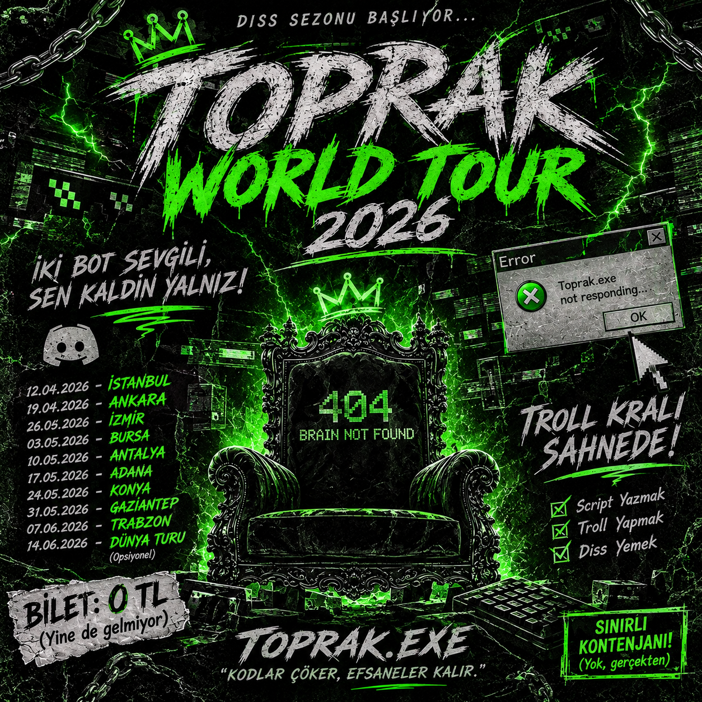

Brain.exe not found
Sistem araması tamamlandı. Sonuç: dosya bulunamadı.
STATUS: UNRESOLVEDBir troll projesi kontrolden çıktı.
Şimdi sistem kayıtları herkese açık.
$ run toprak.exe
[ERROR] brain.exe not found
[WARN] two_ai_bots_are_talking_to_each_other
$ _
THE OFFICIAL DISS TRACK
Son Sürüm (Bozuk) · 2026
Şarkını assets/toprak-diss.mp3 adıyla ekleyince oynatıcı hazır.
Sistem araması tamamlandı. Sonuç: dosya bulunamadı.
STATUS: UNRESOLVEDİki AI botu sohbet ediyor. Kullanıcı konuşmaya dahil değil.
STATUS: STILL RUNNINGÖzgüven belleği taştı. Gerçeklik kontrolü başarısız.
STATUS: CRITICAL
THE OFFICIAL DISS TOUR POSTER /// CLASSIFIED FILE #404